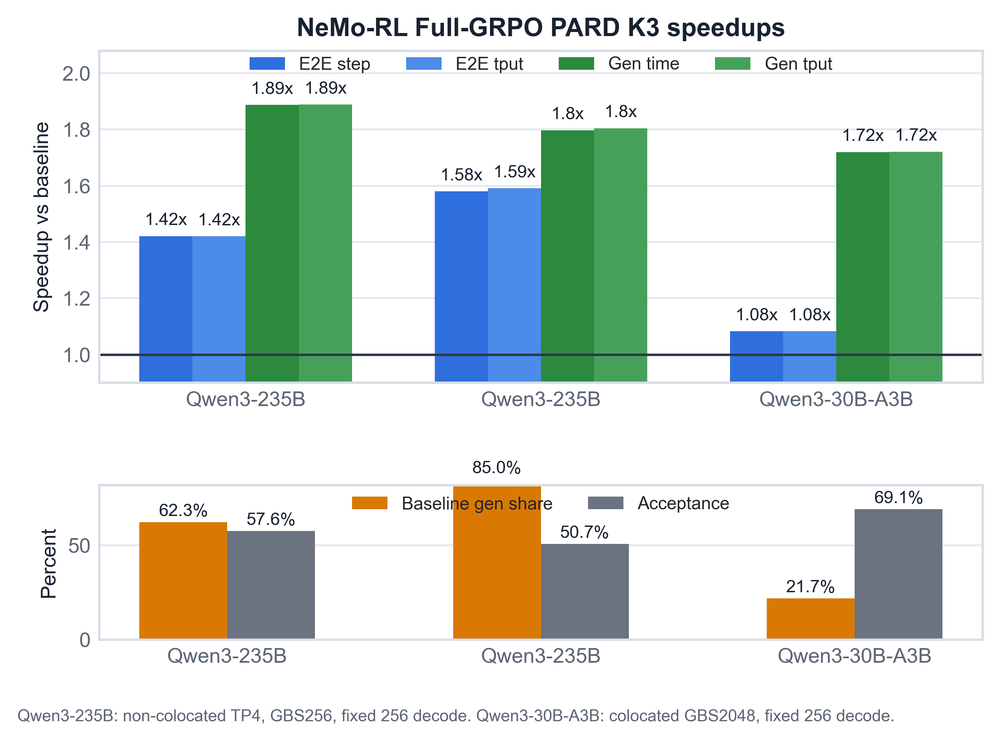
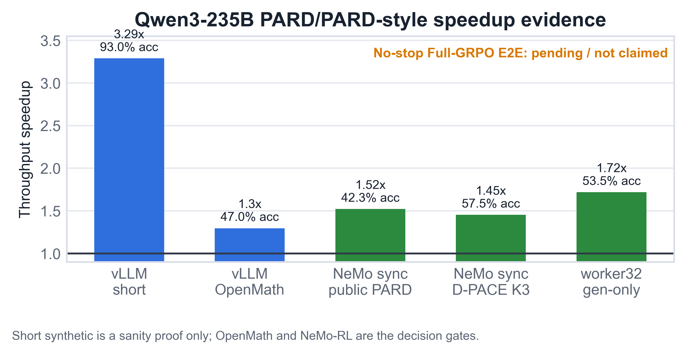
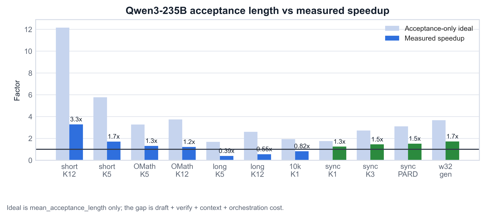

Executive Summary
- PARD now shows real Qwen3-235B NeMo-RL Full-GRPO E2E benefit in the clean non-colocated TP4 branch.
- Public PARD K3 job
3209048vs baseline3209047, Step 2-5, gives total-step speedup1.421x, E2E throughput speedup1.420x, generation-time speedup1.887x, and generation throughput speedup1.888x. - This is fixed
max_new_tokens=256, not 8K/16K generation length. The E2E gain is visible because baseline generation is62.3%of the steady-state step. - Qwen3-30B-A3B GBS2048 completed 20 timing steps: generation-time speedup
1.719x, E2E throughput speedup1.083x. - DFlash is not promoted because current Qwen3-235B OpenMath acceptance is near zero.
1.420xQwen3-235B Full-GRPO E2E throughput
1.887xQwen3-235B generation-time speedup
57.58%Qwen3-235B PARD K3 acceptance
1.083xQwen3-30B-A3B GBS2048 E2E throughput
Current Evidence
| Area | Best / Status | Evidence | Decision |
|---|---|---|---|
| Qwen3-235B no-stop Full-GRPO | non-colocated TP4 public PARD K3 3209048 vs baseline 3209047 | Step 2-5: total-step 1.421x, E2E throughput 1.420x, generation-time 1.887x, generation throughput 1.888x, acceptance 57.58% | Clean Qwen3-235B Full-GRPO E2E win. Non-colocated generation avoids colocated TP4 host-memory OOM while keeping generation TP4. |
| Qwen3-30B-A3B Full-GRPO GBS2048 | public PARD K3 3207978 vs baseline 3207492 | Step 2-20: total-step 1.083x, E2E throughput 1.083x, generation-time 1.719x, generation throughput 1.720x, acceptance 69.10% | Generation improves strongly, but E2E is limited because baseline generation is only 21.7% of the step. |
| vLLM standalone short synthetic | PARD K=12 bs32 | 3.290x, 92.95% acceptance | Useful sanity proof only; not representative of OpenMath or RL. |
| vLLM standalone OpenMath current local | local_pard_k5_dpace_draft_ce_2048_gate | job 3190567; 1.296x, 47.01% acceptance | Promote 2K dynamic D-PACE K5 as the current local checkpoint gate. |
| NeMo-RL latest-main vLLM0.20 generation-only | public_pard_k5 job 3197509 | 1.591x generation throughput only, 42.17% acceptance, mean accepted length 3.108 | Version-skew control was positive and led to the Full-GRPO non-colocated TP4 validation branch. |
| DFlash | DFlash K3 bs1 | max observed acceptance 1.22% | Do not promote current checkpoint; training/alignment issue, not runtime priority. |
Figures



Full-GRPO Result Summary
| Model | Shape | Jobs | Window | Step speedup | E2E tput speedup | Gen-time speedup | Gen tput speedup | Acceptance | Baseline gen share |
|---|---|---|---|---|---|---|---|---|---|
| Qwen3-235B-A22B | noncolocated_tp4_32train_4gen | 3209047 -> 3209048 | step2-5 | 1.421x | 1.420x | 1.887x | 1.888x | 57.58% | 62.29% |
| Qwen3-235B-A22B | noncolocated_tp4_32train_4gen | 3209170 -> 3209171 | step2-3 | 1.580x | 1.591x | 1.797x | 1.804x | 50.66% | 85.05% |
| Qwen3-30B-A3B | colocated_4n4g_gbs2048 | 3207492 -> 3207978 | step2-20 | 1.083x | 1.083x | 1.719x | 1.720x | 69.10% | 21.74% |
Operability Status
| Area | Status | Evidence |
|---|---|---|
| Qwen3-235B no-stop Full-GRPO E2E | proven_positive_noncolocated_tp4 | 3209048 vs 3209047, Step 2-5, E2E throughput 1.420x, total step-time 1.421x, generation-time 1.887x, acceptance 57.58%. |
| Qwen3-30B-A3B GBS2048 Full-GRPO | completed_positive_generation | 3207978 vs 3207492, Step 2-20, generation-time 1.719x and E2E throughput 1.083x. |
| Historical Qwen3-235B colocated TP4 Full-GRPO attempts | superseded_by_noncolocated_tp4_result | Earlier attempts failed through reference-logprob, packed-loss, vLLM wake-up, or Ray host-memory paths. The positive branch separates generation workers onto 4 generation-only nodes. |
| TP8 colocated probe | partial_positive_cross_node_tp | 3208891 showed Step 2-4 E2E throughput 1.133x and generation-time 1.587x vs TP8 baseline, but Step 5 ended with ActorDied/NCCL timeout signatures. |
| Long OSL 8K/16K | not_yet_stable_for_qwen235b_fullgrpo | Qwen3-30B-A3B long-OSL Step 1 was positive, but Step 2 hit vLLM sleep/wake CuMem OOM; Qwen3-235B long-OSL is still open. |
vLLM Runtime Versions
| Path | vLLM version | Runtime | Implication |
|---|---|---|---|
| Qwen3-235B vLLM standalone PARD / OpenMath / high-batch gates | v0.20.2 | vllm-hsg-ultra-rl-v0.20.2-nemo-speed-pr24.sqsh | Standalone numbers are from a newer vLLM engine than most NeMo-RL runs; do not treat them as version-identical. |
| Qwen3-235B NeMo-RL latest-main/nightly public PARD Full-GRPO | 0.20.0 worker venv | /opt/ray_venvs inside nemo_rl_nightly_20260606.sqsh; driver /opt/nemo_rl_venv | Positive no-stop Full-GRPO result is 3209048 vs 3209047 under non-colocated TP4. |
| Qwen3-235B NeMo-RL sync generation / older PARD-style validation | 0.17.0 extracted site | /lustre/fsw/portfolios/coreai/users/sna/qwen3_235b_eagle3/python_site/vllm_0_17_0_extract_py312 | Historical generation-path validation; current clean Full-GRPO result uses latest-main/nightly vLLM 0.20.0. |
| DFlash support track | 0.19.1rc1.dev315+g0b790a250.d20260606 | vllm_dflash_pr38300_0b790a2_cu129_torch28nv_source_py312 | Separate DFlash runtime proof only; not the current PARD/PARD-2-style baseline. |
Why Acceptance Alone Was Misleading
- Decode-heavy 10k K1 has
93.59%acceptance but only0.823xthroughput. - OpenMath reduces accepted length: public PARD K5 bs32 drops from
5.775mean length on short synthetic to3.276. - Long context is the clearest standalone failure mode: PARD K5 at
ISL=10000/OSL=1000reaches only0.392x.
Method Decisions
| Method | Current decision |
|---|---|
| PARD | Primary runtime substrate and public baseline; now positive for Qwen3-235B Full-GRPO fixed-256 under non-colocated TP4. |
| PARD-2 / CAT | Continue local CAT/D-PACE approximations; official code/checkpoints are not public yet. |
| Dynamic D-PACE | Current local candidate: K5 for OpenMath standalone, K3 for NeMo-RL sync generation. |
| DFlash | Do not run NeMo-RL until held-out OpenMath acceptance improves beyond the current near-zero acceptance. |
| P-EAGLE | Track only; no ready Qwen3-235B pretrained path in this stack. |
| SpecKV/adaptive-K | Follow-up after fixed-256 success; focus on long/decode-heavy stability and adaptive K. |
| MoE-specific verification | Systems follow-up for long-context Qwen3-235B and non-colocated resource efficiency. |
Completion Audit
| Requirement | Status | Gap |
|---|---|---|
| Find Qwen3-235B SpecDec methods that can show performance benefit | met_for_fixed256_fullgrpo | Public PARD K3 shows Qwen3-235B Full-GRPO E2E speedup under non-colocated TP4. Long-context/decode-heavy Qwen3-235B remains open. |
| Start from PARD/PARD-2 and recent 2025-2026 methods | met_for_triage | Official PARD-2 code/checkpoints are still not public in AMD-AGI/PARD. |
| Make a Qwen3-235B method work in vLLM standalone | partially_met | K1 and long-context/decode-heavy settings can still be slower despite high acceptance. |
| Incorporate methods into NeMo-RL and test actual performance | met_for_public_pard_k3_fixed256 | Qwen3-235B non-colocated TP4 and Qwen3-30B-A3B GBS2048 both have parsed Full-GRPO timing metrics. |
| Avoid repetitive failures by documenting negative evidence | met_for_current_evidence | Colocated TP4 host-memory OOM, TP8 cross-node caveat, and long-OSL CuMem sleep/wake failures are documented. |
| Full objective completion | not_complete | Fixed-256 PARD result is positive, but the broader objective still includes recent-method exploration and long/decode-heavy Qwen3-235B behavior. |
Operational Runbook
Current remote poll command:
ssh oci-hsg-cs-001-vscode-02 'sacct -j 3209047,3209048,3207978,3208891 -o JobID,JobName%80,State,Elapsed,ExitCode -P'
Resume Commands
Local refresh:
scripts/refresh_qwen235b_report_bundle.sh